《电子技术基础》例题与习题解析
文档导航
第1章 半导体基础与晶体管直流电路
教材范围：书内第1–34页 | 例题5道 + 习题4道
前置知识点（从零开始）
知识点0：电路三件套——你必须先会的基础
① 欧姆定律（U = I × R）
这是电学最基础的公式。电压（U）= 电流（I）× 电阻（R）。就像水压=水流量×水管阻力。三个量知道两个就能求第三个。
举例：一个电阻R=4kΩ两端电压U=12V，流过它的电流 I = 12V ÷ 4kΩ = 3mA。
② 基尔霍夫电压定律（KVL）——回路电压和为零
沿着电路中任意一个闭合回路走一圈，所有电压升（电源）和电压降（电阻上的压降）加起来等于零。
举例：电源UCC=12V，串接电阻RC和晶体管UCE。回路：12V = IC×RC + UCE，所以 UCE = 12 − IC×RC。这就是后面求静态工作点的公式来源！
③ 分压公式——两个电阻串联分电压
两个电阻R1、R2串联，总电压U加在两端，R2上的电压为：
考试必用：稳压管题、分压式偏置电路、比较器阈值计算都要用分压公式。必须烂熟于心！
知识点0.5：PN结——所有半导体器件的核心
半导体材料（硅Si）本身不导电也不绝缘。但科学家发现了一个神奇操作：给硅里掺不同的杂质，就能造出两种"性格"的半导体：
| 类型 | 掺什么 | 多出来的 | 性格 |
|---|---|---|---|
| N型 | 掺磷(P) | 多余电子(负) | 想往外跑的电子多 |
| P型 | 掺硼(B) | 多余空穴(正) | 想被填的"坑"多 |
PN结的单向导电性：
- 正向加电（P接正、N接负）：外力把电子推向空穴 → 电流畅通 → 导通
- 反向加电（P接负、N接正）：外力把电子和空穴拉开 → 中间区域变宽 → 电流过不去 → 截止
知识点1：二极管——单向阀门
二极管是最简单的半导体器件，有两个电极：阳极（正极A）和阴极（负极K）。它只允许电流从一个方向通过——从阳极到阴极，反过来就不行。
什么时候导通（门开）？阳极电位比阴极电位高时（UA > UK），二极管导通，相当于一根导线。
什么时候截止（门关）？阳极电位比阴极低时（UA < UK），二极管截止，相当于断路。
知识点2：二极管电路分析的"断开法"
给你一个二极管电路，怎么判断它通不通？用"断开法"：
- 断开二极管：假装把它从电路里拿掉
- 算两端电位：分别算阳极和阴极所在位置的电压
- 比较大小：阳极>阴极→导通；阳极<阴极→截止
- 代回电路：导通就当导线（短路），截止就当断路，重新算输出
- 共阳极（阳极连一起）：阴极电位最低的先导通（电流找阻力最小的路）
- 共阴极（阴极连一起）：阳极电位最高的先导通
知识点3：稳压二极管——反向也能工作的特殊二极管
普通二极管反向加电压就截止。但稳压二极管在反向电压达到一定值（UZ）时会"反向击穿"，并且把电压稳定在UZ不变——这就是"稳压"。
稳压管电路必须有限流电阻R串联，否则电流太大会烧毁。稳压管电流必须在IZmin~IZmax之间。
判断稳压管稳没稳压的方法：
- 假设稳压管没击穿（当断路），用分压公式算输出Uo
- 算出的Uo < UZ → 电压不够，确实没击穿，Uo就是分压值
- 算出的Uo ≥ UZ → 电压够了！稳压管击穿稳压，Uo = UZ
- 稳压时验算电流是否在安全范围
知识点4：晶体管（三极管）——电控水龙头
晶体管有三个电极：基极b（控制手柄）、集电极c（出水管）、发射极e（进水管）。分NPN和PNP两种。
核心公式：IC = β × IB（β是放大倍数，通常50~200）
知识点5：晶体管的三个工作状态
晶体管内部有两个"PN结"（两扇门）：发射结（b-e之间）和集电结（b-c之间）。两扇门的开/关组合决定工作状态：
| 发射结 | 集电结 | 状态 | 生活比喻 |
|---|---|---|---|
| 导通 | 反偏(关) | 放大区 | 阀门正常工作 |
| 导通 | 正偏(开) | 饱和区 | 阀门开到最大 |
| 截止(关) | 反偏(关) | 截止区 | 阀门关死 |
| 导通 | 零偏 | 临界饱和 | 阀门快到最大 |
发射结电压怎么算？
- NPN管：UBE = UB − UE
- PNP管：UEB = UE − UB（注意顺序反！）
导通判据：硅管≈0.7V导通，锗管≈0.3V导通，≈0V截止，远超0.7V（如3V）=损坏。
集电结偏置判断：NPN看UB和UC谁大（UB>UC=正偏），PNP看UC和UB谁大（UC>UB=正偏），相等=零偏。
知识点6：固定偏置电路的静态分析公式
IC = β × IB
UCE = UCC − IC × RC − IE × RE
饱和条件：IB > ICS/β，其中 ICS = UCC/RC
知识点7：公式怎么来的？（推导过程）
① IB=(UCC−UBE)/RB 的推导
从UCC出发，经过RB，到基极b，再经过发射结到发射极e，回到地。这是一个回路，用KVL：
→ IB = (UCC − UBE) / RB
物理意义：电源UCC的电压，先被发射结"吃掉"0.7V（维持导通），剩下的全加在RB上，用欧姆定律算出IB。
② IC=β×IB 的来源
这是晶体管的放大特性。基极电流IB像"水龙头手柄"，集电极电流IC像"出水量"。β是"手柄灵敏度"——手柄拧一点，出水量放大β倍。
③ IE=IC+IB 的推导（KCL）
基极流入IB，集电极流入IC，发射极流出IE。根据基尔霍夫电流定律（节点电流和为零）：
④ UCE=UCC−IC×RC 的推导
从UCC出发，经过RC，到集电极c，再经过晶体管到发射极e，回到地。用KVL：
物理意义：电源电压减去RC上的压降，剩下的就是晶体管两端的电压UCE。如果UCE接近0V→饱和（管子完全导通，电压全被RC吃了）；如果UCE接近UCC→截止（管子断路，没有电流通过RC）。
⑤ 饱和条件的推导
当晶体管饱和时，UCE≈UCES≈0.3V（管压降几乎为零）。此时集电极电流达到最大值：
要达到饱和，基极电流必须足够大：IB > ICS/β。如果IB不够大，IC=β×IB < ICS，管子在放大区。如果IB太大，IC到顶了（=ICS），多出来的IB无处可去→饱和。
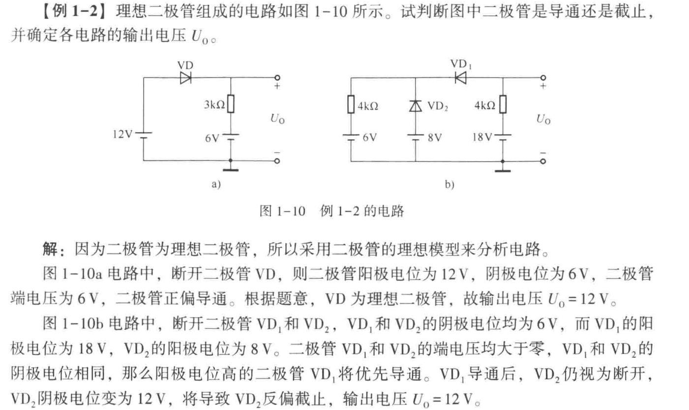
这道题就是让你练"断开法"。记住4步：断开→算电位→比较→代回。
第1步：断开二极管
假装把二极管拿掉，电路变成两部分。
第2步：算两端电位
阳极那边接的是正电源（比如+12V），阴极那边通过电阻接另一个电源（比如+6V）。
第3步：比较
12V > 6V → 阳极电位更高 → 二极管导通
第4步：代回电路
导通后二极管相当于导线，输出电压直接等于阳极电位。
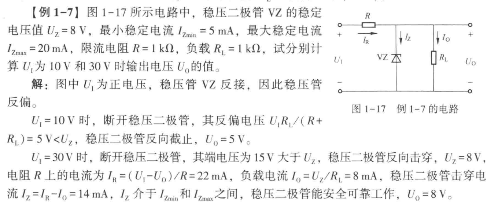
稳压管题就是"假设断路算分压，够不够UZ决定稳不稳"。
情况1：U1=10V
- 假设VZ断开，算分压：Uo = 10×RL/(R+RL) = 10×1/(1+1) = 5V
- 5V < UZ=8V → 电压不够，VZ没击穿（截止）
- 结论：Uo = 5V，IZ = 0
情况2：U1=30V
- 假设VZ断开，算分压：Uo = 30×1/(1+1) = 15V
- 15V > UZ=8V → 电压够了！VZ击穿稳压
- Uo = UZ = 8V
- 验算电流：IR=(30−8)/1=22mA，IL=8/1=8mA，IZ=22−8=14mA
- 5mA < 14mA < 20mA → 在安全范围内 ✓
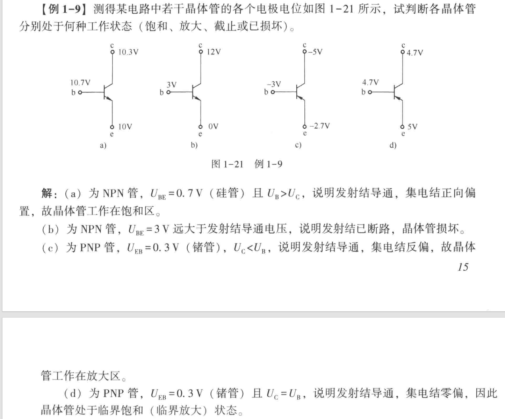
每管走4步：看管型→算发射结电压→判集电结→下结论。
(a) NPN：c=10.3V, b=10.7V, e=10V
UBE=10.7−10=0.7V（硅管导通）；UB=10.7>UC=10.3（集电结正偏）→ 饱和
(b) NPN：c=12V, b=3V, e=0V
UBE=3−0=3V（远超0.7V，发射结断了）→ 损坏
(c) PNP：c=−5V, b=−3V, e=−2.7V
UEB=−2.7−(−3)=0.3V（锗管导通）；UC=−5
(d) PNP：c=4.7V, b=4.7V, e=5V
UEB=5−4.7=0.3V（锗管导通）；UC=4.7=UB=4.7（零偏）→ 临界饱和
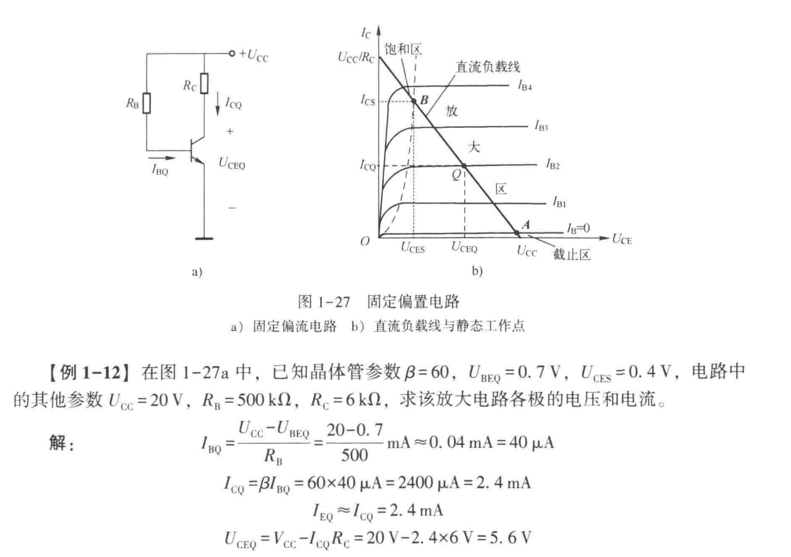
静态分析就是3个公式套上去。
第1步：求IB
第2步：求IC
第3步：求UCE
UCE=5.6V，在0~20V之间，说明管子确实在放大区。
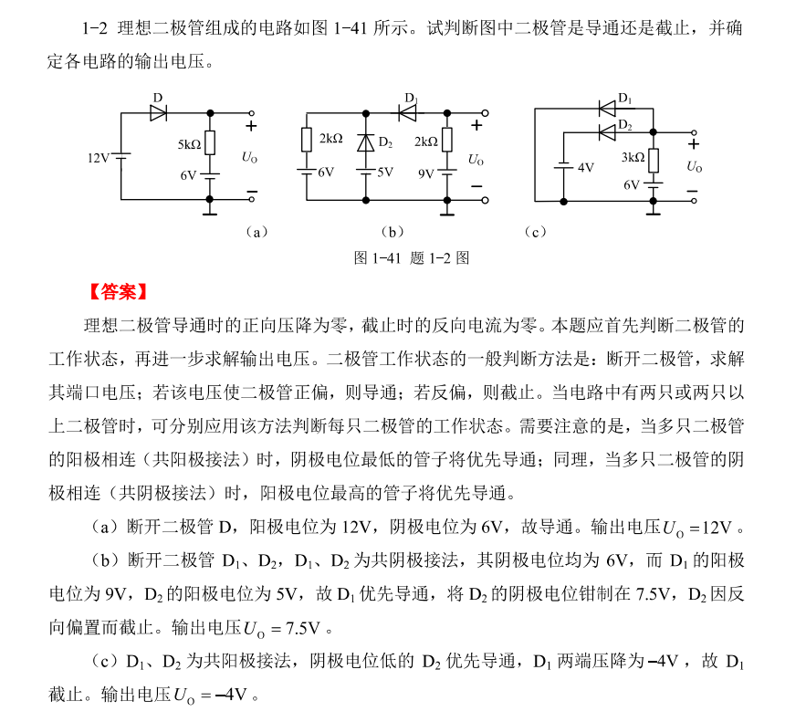
(a) 单管：断开法
阳极12V > 阴极6V → 导通，Uo = 12V
(b) 共阴极：阳极高的先通
9V > 5V → VD1先导通，钳位后VD2截止 → Uo = 7.5V
(c) 共阳极：阴极低的先通
4V支路阴极更低 → VD2先导通，VD1截止 → Uo = −4V
| 电路 | 导通管 | 截止管 | Uo |
|---|---|---|---|
| (a) | VD | — | 12V |
| (b) | VD1 | VD2 | 7.5V |
| (c) | VD2 | VD1 | −4V |
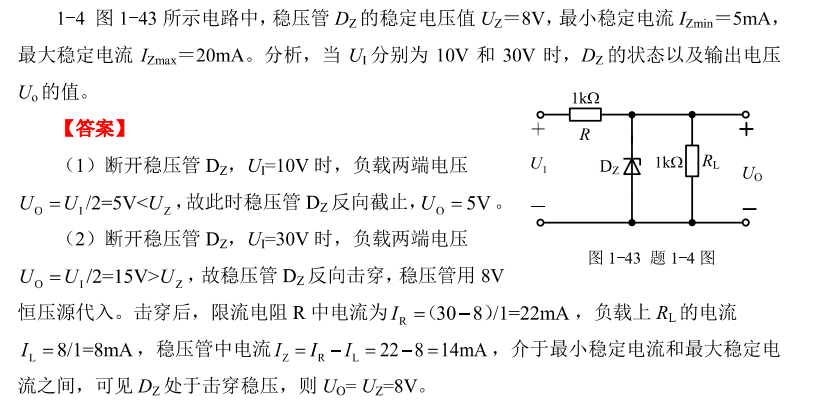
U1=10V：假设断路算分压
VZ截止，Uo=5V
U1=30V：假设断路算分压
VZ稳压，Uo=UZ=8V
验算：IZ=(30−8)/1k − 8/1k = 22−8 = 14mA，在5~20mA范围内 ✓
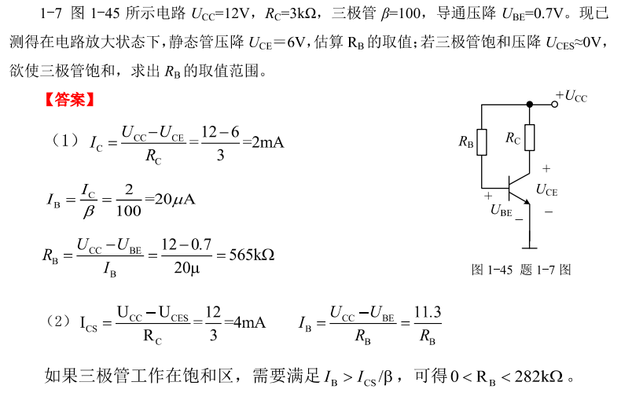
(1) 放大时求RB
UCE→IC→IB→RB，三步反推：
(2) 饱和时RB范围
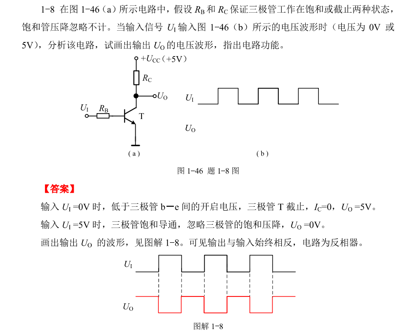
输入0V→发射结没导通→截止→输出=UCC=5V（高）
输入5V→基极有电流→饱和→输出≈0V（低）
第2章 晶体管放大电路
教材范围：书内第35–74页 | 例题3道 + 习题1道
前置知识点（从零开始）
知识点0：什么是"放大"？为什么要"偏置"？
① 什么是放大？
放大 = 用小信号控制大能量。话筒产生的信号只有几毫伏，喇叭需要几伏才能响。放大电路把小信号"放大"成大信号。注意：能量守恒！放大的能量来自直流电源UCC，不是凭空产生的。
② 为什么要设"静态工作点"（Q点）？
晶体管不是线性的——在信号很小或很大时会失真。设静态工作点就是在没有信号时，先给晶体管一个合适的"起点"，让它在放大区的中间，这样信号加上去后，正负半周都能被放大，不失真。
③ 直流分析 vs 交流分析
| 类型 | 分析什么 | 信号 | 电容 | 公式 |
|---|---|---|---|---|
| 静态(直流) | Q点(IB,IC,UCE) | 只有直流UCC | 隔直(断路) | 欧姆定律+KVL |
| 动态(交流) | Au,Ri,Ro | 叠加交流小信号 | 通交(短路) | rbe公式+微变等效 |
④ 固定偏置 vs 分压式偏置
第2章有两种偏置电路，必须分清：
- 固定偏置：只有一个RB接基极。简单但工作点受温度影响大。公式：IB=(UCC−0.7)/RB
- 分压式偏置：RB1、RB2分压设定基极电压，加RE稳定工作点。公式：UB=UCC×RB2/(RB1+RB2) → IC≈UE/RE
知识点1：共射放大电路的结构
最常用的放大电路叫"共射放大电路"（发射极是输入和输出的公共端）：
知识点2：静态分析（没信号时电路在干什么）
静态分析的目的就是求静态工作点Q：IB、IC、UCE。
方法：把所有电容当开路（电容隔直流），画出直流通路，用3个公式：
② IC = β × IB
③ UCE = UCC − IC·RC − IE·RE
知识点3：动态分析（有信号时放大多少倍）
方法：把电容当短路、直流电源当接地，画出交流通路。晶体管用一个等效模型替换：输入端是电阻rbe，输出端是受控电流源β·ib。
| 参数 | 含义 | 公式 | 大白话 |
|---|---|---|---|
| Au | 电压放大倍数 | −β·(RC//RL)/rbe | 信号被放大几倍（负号=反相） |
| Ri | 输入电阻 | RB//rbe ≈ rbe | 从输入端看进去的电阻 |
| Ro | 输出电阻 | RC | 从输出端看进去的电阻 |
知识点4：rbe公式和微变等效电路的推导
① rbe=300+(1+β)×26/IE 怎么来的？
rbe是晶体管基极-发射极之间的交流等效电阻。它由两部分组成：
- 300Ω（rbb'）：基区体电阻，是材料本身的电阻，固定值
- (1+β)×26/IE（re折算到基极）：发射结电阻re=26/IE（mV/mA=Ω），折算到基极要乘(1+β)
注意计算：300+(1+β)×26/IE，其中IE单位是mA，26的单位是mV。例如β=50, IE=1mA：300+51×26/1=300+1326=1626Ω=1.626kΩ。千万别算错！
② 微变等效电路怎么画？
把原电路转换成只含交流信号的等效电路，步骤：
- 电容短路：耦合电容C₁、C₂和旁路电容CE对交流相当于导线
- 直流电源接地：UCC对交流相当于短路到地（因为直流电源内阻≈0）
- 晶体管替换：输入端(b-e)用电阻rbe代替；输出端(c-e)用受控电流源β·ib代替
- 画出电路后，用虚断+KCL分析
③ Au=−β·RL'/rbe 的推导
从微变等效电路推导：
- 输入：ui=ib×rbe（欧姆定律）
- 输出：受控源β·ib流过RL'=RC//RL，所以uo=−β·ib×RL'（负号因为电流从下往上流过负载，压降方向反）
- 放大倍数：Au=uo/ui=(−β·ib×RL')/(ib×rbe)=−β·RL'/rbe
④ Ri和Ro的物理意义
- Ri（输入电阻）：从信号源看进去的电阻。Ri=RB//rbe。Ri越大→信号源负担越小（吸取电流少）。电压放大器希望Ri大。
- Ro（输出电阻）：从负载看进去的电阻（信号源短路后）。Ro=RC。Ro越小→带负载能力越强。电压放大器希望Ro小。
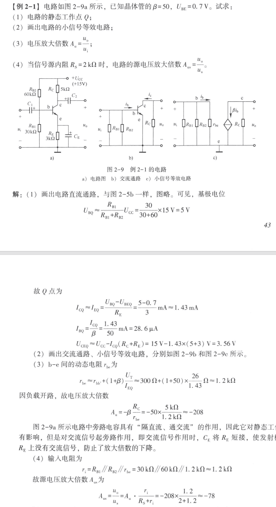
分压式偏置和固定偏置不一样！基极电压由RB1、RB2分压决定，多了一步算UB。
第1步：算基极电位UB（分压公式）
第2步：算发射极电位UE
第3步：算IC（≈IE）
第4步：算IB和UCE
UCE = UCC − IC×RC − IE×RE = 15 − 1.43×5 − 1.43×3 = 3.55V
UCE在0~15V之间 → 放大区 ✓
(2) 画小信号等效电路
如图2-9c所示。画法三步：①电容（C1、C2、CE）短路 ②直流电源UCC接地 ③晶体管换成rbe + β·ib受控源。注意：CE旁路电容把RE短路了，所以AC分析中RE不出现！
(3) 计算电压放大倍数Au
Au = −β×RC/rbe = −50×5/1.2 ≈ −208
负号表示输出与输入反相（共射电路特点）。增益很大是因为CE把RE旁路了，没有交流负反馈。
(4) 计算源电压放大倍数Aus
Aus = Au × ri/(RS+ri) = −208×1.2/(2+1.2) ≈ −78
源电压增益比Au小很多，因为信号源内阻RS=2kΩ分走了一半电压。
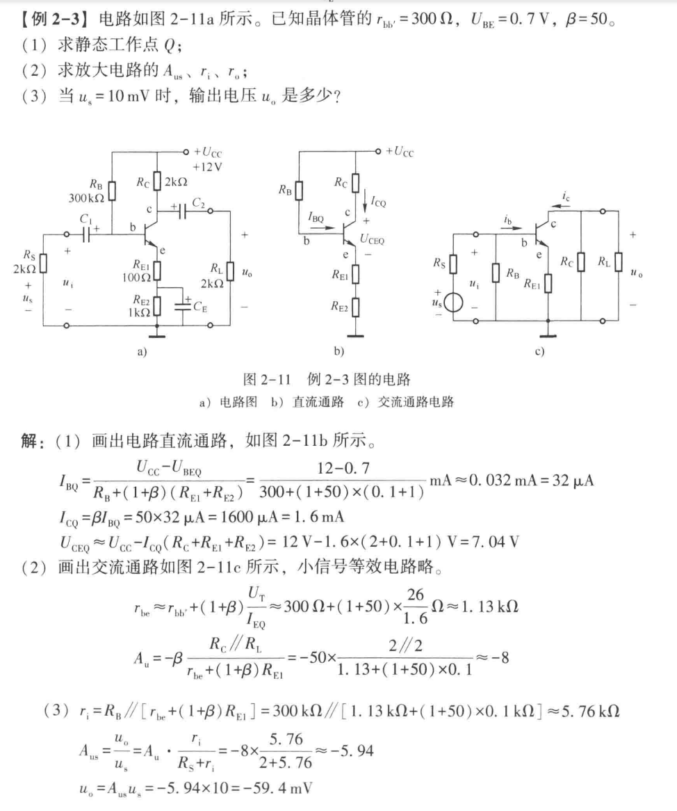
这道题的精髓在于分发射极电阻：RE1（100Ω）没有旁路电容，RE2（1kΩ）被CE旁路。DC分析两个都算，AC分析只算RE1！
(1) 求静态工作点Q
= (12 − 0.7) / [300 + 51×1.1] = 11.3 / 356.1 ≈ 32μA
ICQ = β×IBQ = 50×32 = 1.6mA
UCEQ = VCC − ICQ×(RC+RE1+RE2) = 12 − 1.6×(2+0.1+1) = 12 − 4.96 = 7.04V
UCEQ≈7V，约为VCC的一半 → Q点在放大区正中，很好 ✓
(2) 求Aus、ri、ro
RL' = RC//RL = 2//2 = 1kΩ
Au = −β×RL' / [rbe + (1+β)×RE1] = −50×1 / (1.13+5.1) ≈ −8
ri = RB//[rbe+(1+β)×RE1] = 300//6.23 ≈ 5.76kΩ
ro ≈ RC = 2kΩ
Aus = Au×ri/(RS+ri) = −8×5.76/7.76 ≈ −5.94
对比例2-1：例2-1的Au≈−208（CE旁路了整个RE），这里Au≈−8（RE1未被旁路，产生交流负反馈）。增益降低了26倍，但稳定性和输入电阻大幅提高！
(3) 求uo
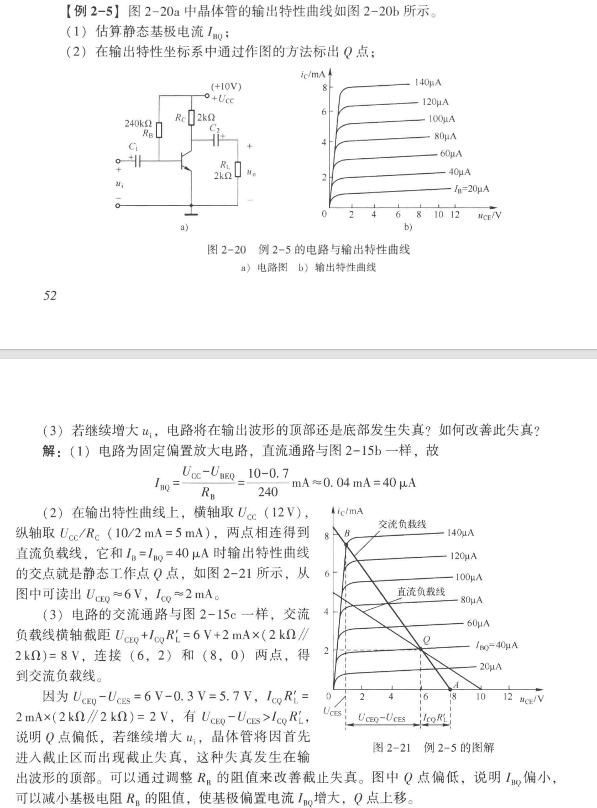
这题考的是图解法——在特性曲线上画负载线找交点，不是套公式算动态参数！
(1) 估算IBQ
(2) 图解法找Q点
- 画直流负载线：方程 uCE = VCC − iC×RC = 10 − 2×iC
- 找两个端点：横轴截距(10V, 0)，纵轴截距(0, VCC/RC=5mA)
- 连接两点画直线 = 直流负载线
- 找IB=40μA的那条特性曲线
- Q点 = 负载线与IB=40μA曲线的交点
从图中读出：ICQ ≈ 2mA，UCEQ ≈ 6V
验证：UCEQ = 10 − 2×2 = 6V ✓
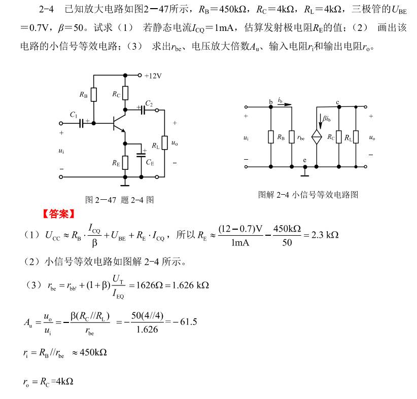
(1) 求RE
IB=1mA/50=20μA → 列KVL：12=0.02×450+0.7+1×RE → RE=2.3kΩ
(2) 小信号等效电路
电容短路、电源接地，晶体管换成rbe+β·ib受控源。
(3) 四个参数
RL' = 4//4 = 2kΩ
Au = −50×2/1.626 ≈ −61.5
Ri = 450//1.626 ≈ 1.6kΩ
Ro = 4kΩ
第3章 集成运算放大器
教材范围：书内第75–103页 | 例题5道 + 习题4道
前置知识点（从零开始）
知识点0：运算放大器——电子时代的"万能放大器"
① 什么是运算放大器（Op-Amp）？
运算放大器是一种高增益的直接耦合放大器，早期用于模拟计算机做加减乘除运算，所以叫"运算"放大器。它有5个引脚：2个输入(+和-)、1个输出、2个电源。
② 理想运放的三个条件（推导虚短虚断的基础）
| 参数 | 理想值 | 物理意义 |
|---|---|---|
| 开环增益A | →∞ | u+和u-差一点点，输出就到极限 |
| 输入电阻Rid | →∞ | 输入端不取电流（虚断的来源） |
| 输出电阻Ro | →0 | 输出端电压不受负载影响 |
③ 虚短和虚断的推导（考试必考！）
虚断：因为输入电阻Rid→∞，流入运放输入端的电流≈0。
虚短：运放工作在线性区时，uo=A×(u+−u-)。因为A→∞而uo有限，所以(u+−u-)=uo/A→0。
④ 什么是反馈？正反馈 vs 负反馈
反馈=把输出信号的一部分送回输入端。
- 负反馈：送回的信号削弱输入→运放工作在线性区→虚短成立→能做运算（加减乘除）
- 正反馈：送回的信号增强输入→运放很快到饱和→虚短不成立→做比较器/振荡器
⑤ 负反馈的四种类型（考试常考判断题）
| 反馈类型 | 从输出端取 | 回到输入端 | 效果 |
|---|---|---|---|
| 电压串联 | 电压(并联输出) | 串联(电压比较) | 稳定输出电压，增大输入电阻 |
| 电压并联 | 电压 | 并联(电流比较) | 稳定输出电压，减小输入电阻 |
| 电流串联 | 电流(串联输出) | 串联 | 稳定输出电流，增大输入电阻 |
| 电流并联 | 电流 | 并联 | 稳定输出电流，减小输入电阻 |
知识点1：运放的两个输入端
- 同相端(+)：信号从这里进，输出同方向变化
- 反相端(-)：信号从这里进，输出反方向变化
知识点2：两大法宝——"虚短"和"虚断"
- 虚短：u+ ≈ u-（两个输入端电压几乎相等，像短路但不是真短路）
- 虚断：I+ ≈ 0，I- ≈ 0（输入端几乎不取电流，像断路）
知识点3：基本运算电路公式表
| 电路 | 信号从哪进 | 输出公式 | 大白话 |
|---|---|---|---|
| 反相比例 | -端进，+端接地 | uo=−(RF/R1)·ui | 放大RF/R1倍，反相 |
| 同相比例 | +端进，-端经R接地 | uo=(1+RF/R1)·ui | 放大(1+RF/R1)倍，同相 |
| 电压跟随器 | +端进，输出直连-端 | uo=ui | 1倍跟随，起缓冲隔离 |
| 反相加法器 | 多路从-端进 | uo=−RF·(ui1/R1+ui2/R2) | 把多个信号加起来取反 |
| 减法器 | 两路分别从+、-端进 | uo=(RF/R1)·(ui2−ui1) | 两个信号相减 |
知识点4：反馈判断方法
- 找反馈通路：从输出到输入之间有没有元件连接？有=有反馈
- 判极性：假设输入↑→追踪到输出→反馈回来是增强(正)还是削弱(负)输入
- 判串/并联：反馈信号和输入信号在输入端串联=串联反馈；并联=并联反馈
- 判电压/电流：反馈取自输出电压=电压反馈；取自输出电流=电流反馈
知识点5：电压比较器（没有负反馈的运放）
当运放没有负反馈（开环或有正反馈），工作在非线性区，输出只有两个值：+Uom和−Uom。这就是比较器——比较两个输入的大小，输出高或低。
知识点6：运放经典电路公式推导（考试必背）
① 反相比例放大器：uo=−(RF/R1)·ui
推导（虚短+虚断）：
- 虚短：u-=u+=0V（+端接地）
- 虚断：流入(-)端电流=0，所以流过R₁的电流全流过RF
- 流过R₁的电流：i=(ui−0)/R₁=ui/R₁
- 流过RF的电流：i=(0−uo)/RF=−uo/RF
- 两电流相等：ui/R₁=−uo/RF → uo=−(RF/R₁)·ui
负号来源：信号从(-)端输入，输出反相。RF/R₁>1时放大，<1时缩小。
② 同相比例放大器：uo=(1+RF/R₁)·ui
推导：
- 虚短：u-=u+=ui（信号从+端输入）
- 虚断：流入(-)端=0，R₁和RF串联分压
- 分压关系：u-=uo×R₁/(R₁+RF)
- 代入虚短：ui=uo×R₁/(R₁+RF) → uo=(1+RF/R₁)·ui
特例：RF=0（输出直接接回(-)端）→ uo=ui，这就是电压跟随器！
③ 反相加法器：uo=−RF·(ui1/R₁+ui2/R₂)
推导：(-)端虚地(u-=0)，虚断→两个输入电流之和全流过RF：
当R₁=R₂=R时：uo=−(RF/R)·(ui1+ui2)，输出=输入之和×放大倍数。
④ 减法器（差动放大器）：uo=(RF/R₁)·(ui2−ui1)
信号ui1从(-)端输入，ui2从(+)端输入（经R₃、R₄分压）。用叠加原理：
- ui1单独作用（ui2=0）：反相比例 → uo1=−(RF/R₁)·ui1
- ui2单独作用（ui1=0）：同相比例 → uo2=(1+RF/R₁)·u+，其中u+=ui2×R₄/(R₃+R₄)
- 当R₃=R₁, R₄=RF时：u+=ui2×RF/(R₁+RF)，uo2=(RF/R₁)·ui2
- 叠加：uo=(RF/R₁)·(ui2−ui1)
⑤ 电压比较器分析
比较器没有负反馈，虚短不成立！分析方法是：
- 比较u+和u-的大小
- u+>u- → uo=+Uom（正饱和）
- u+<u- → uo=−Uom（负饱和）
- u+=u-时的ui值 = 阈值电压UTH（跳变点）
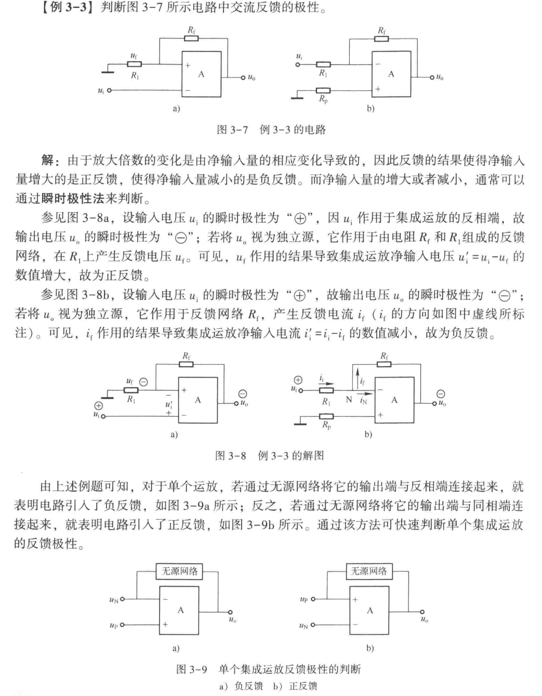
用"瞬时极性法"——假设输入增大，一路追到输出，再追反馈回来，看是增强还是削弱。
判断步骤
- 假设ui↑ → 追到uo↑（或↓）
- 反馈信号从uo取回 → 反馈到输入端是↑还是↓
- 反馈↑增强输入=正反馈；反馈↓削弱输入=负反馈
- 反馈取自输出电压=电压反馈；取自电流=电流反馈
- 反馈与输入串联=串联；并联=并联
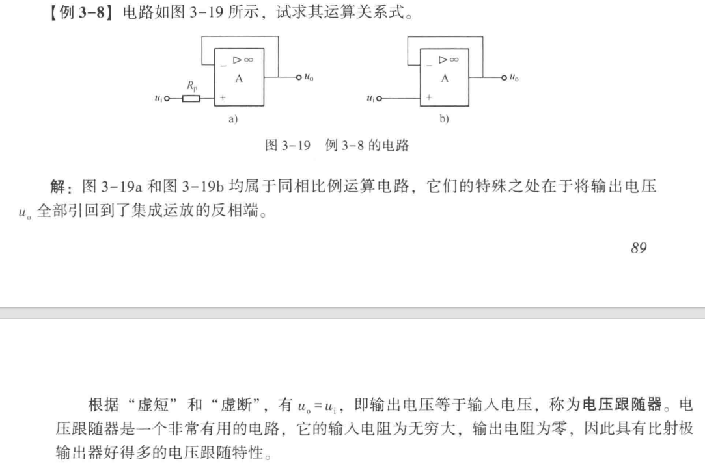
这题是电压跟随器——同相比例电路的特例（RF=0，输出全部反馈到反相端）。
分析（虚短+虚断）
- 虚断：i+=0 → u+=ui（输入信号直接到+端）
- 虚短：u-=u+=ui
- 反馈：输出直接接反相端 → u-=uo
- 所以 uo = u- = ui
电压跟随器的特点
- 输入电阻极大（→∞），输出电阻极小（→0）
- 不放大电压，用于阻抗变换/缓冲隔离
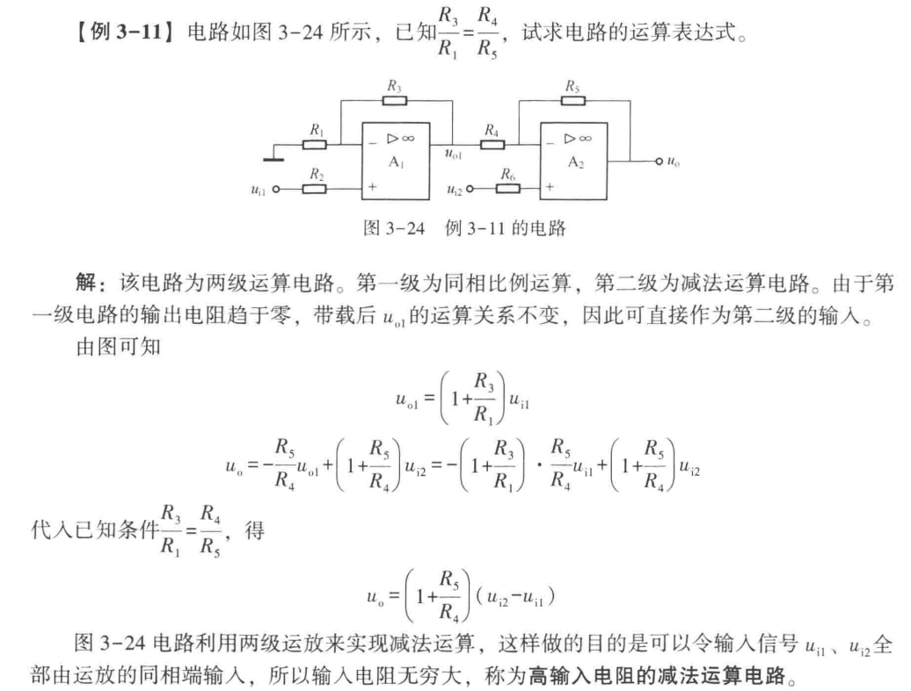
这是两级运放：第一级是同相比例（放大ui1），第二级是减法器（uo1和ui2相减）。
第1步：第一级输出
第2步：第二级减法
第3步：代入条件R3/R1=R4/R5化简
这个电路的好处：两个输入都从+端进，输入电阻无穷大（高输入电阻减法器）。
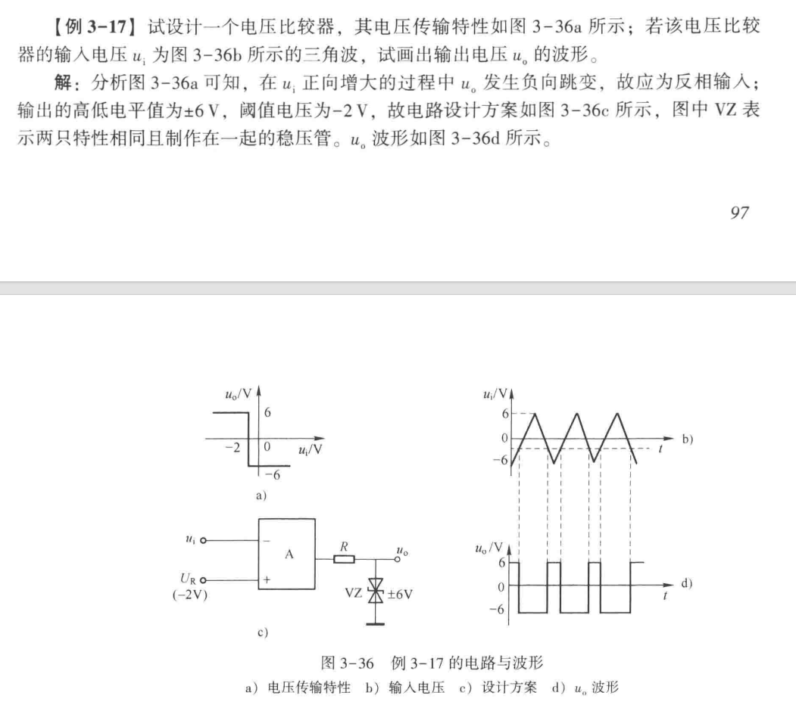
第1步：从传输特性读参数
- ui增大时uo负跳变 → 反相输入（信号接−端）
- 输出高低电平 ±6V → 用双向稳压管限幅(UZ=6V)
- 阈值电压 = −2V → 参考电压UREF=−2V接+端
第2步：画输出波形
三角波从下往上经过−2V时，输出从+6V跳到−6V；从上往下经过−2V时，输出从−6V跳回+6V。
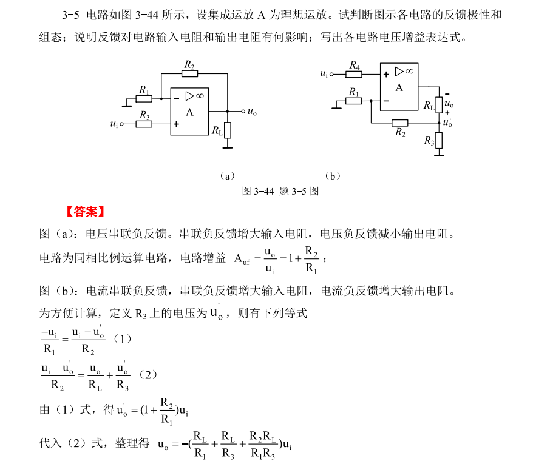
电路(a)：同相比例电路
- 瞬时极性法：ui↑→uo↑→反馈到−端↑→削弱输入→负反馈
- 反馈取自输出电压→电压反馈
- 输入端串联关系→串联反馈
- 结论：电压串联负反馈
串联→输入电阻增大；电压→输出电阻减小
电路(b)：电流串联负反馈
反馈取自输出电流→电流反馈；输入串联→串联反馈；结论：电流串联负反馈
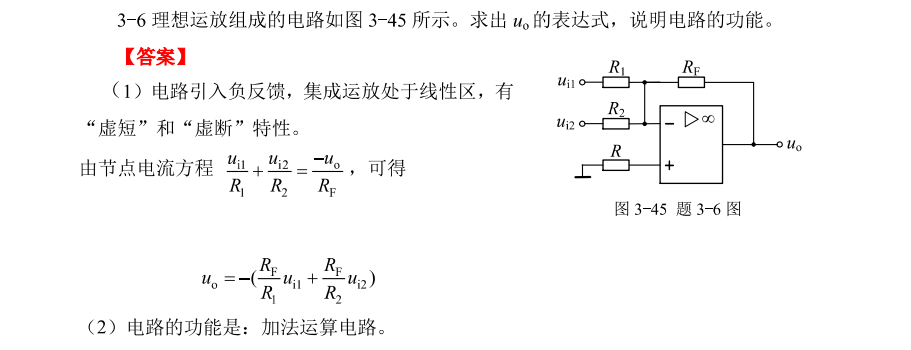
虚断：-端不取电流 → 两路电流全流向RF。虚短：u-=u+=0。
uo = −RF·(ui1/R1 + ui2/R2)
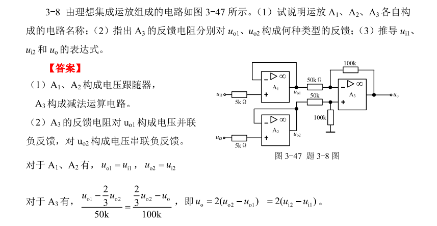
(1) 电路名称
- A1：电压跟随器（uo1=ui1，起缓冲隔离）
- A2：电压跟随器（uo2=ui2）
- A3：减法运算电路（差动放大器）
整体构成仪表放大器——输入阻抗高、共模抑制好，用于精密测量。
(2) A3反馈类型
- 对uo1（−端）：电压并联负反馈
- 对uo2（+端经分压）：电压串联负反馈
(3) 推导uo
跟随器：uo1=ui1，uo2=ui2。代入A3减法公式：
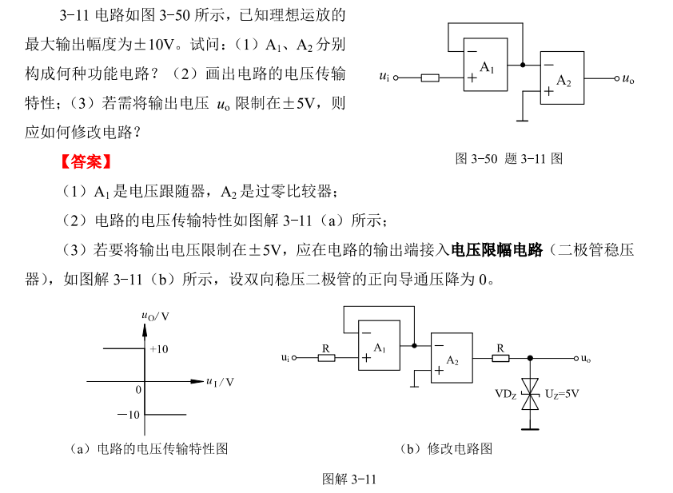
(1) 判断功能
- A1：电压跟随器（uo1=ui）
- A2：过零比较器（−端接信号，+端接地，无负反馈→非线性）
(2) 传输特性
- ui > 0 → uo = −10V
- ui < 0 → uo = +10V
- 在ui=0处跳变
(3) 限幅到±5V
在A2输出端并联双向稳压管(UZ=5V)+限流电阻R。超过±5V时稳压管钳位。
第4章 组合逻辑电路
教材范围：书内第104–148页 | 例题5道 + 习题3道
前置知识点（从零开始）
知识点0：数制与逻辑代数——数字电路的"语言"
① 为什么用二进制？
数字电路里，晶体管只有两个状态——导通(1)和截止(0)。所以电路只能"数"0和1，就像你只有两个手指头。用这两个数字就能表示所有信息，这就是二进制。
② 二进制↔十进制转换
二进制→十进制：每一位乘以2的幂次，然后相加。
十进制→二进制：除2取余，倒序排列。
6 ÷ 2 = 3 余 0
3 ÷ 2 = 1 余 1
1 ÷ 2 = 0 余 1
倒序读：1101 → 1310 = 11012
③ 原码、反码、补码——表示正负数
用最高位当符号位：0=正，1=负。8位二进制能表示-128~+127。
| 类型 | 正数(+13) | 负数(-13) | 规则 |
|---|---|---|---|
| 原码 | 00001101 | 10001101 | 最高位表符号，其余照写 |
| 反码 | 00001101 | 11110010 | 正数不变；负数=原码除符号位外逐位取反 |
| 补码 | 00001101 | 11110011 | 正数不变；负数=反码+1 |
④ 逻辑代数基本定律（化简表达式的工具）
就像普通代数有交换律、结合律一样，逻辑代数也有自己的运算定律。这些定律是卡诺图化简之外，另一种化简逻辑表达式的方法。
| 定律名称 | 公式 | 口诀 |
|---|---|---|
| 交换律 | A+B=B+A，A·B=B·A | 顺序无所谓 |
| 结合律 | (A+B)+C=A+(B+C) | 分组无所谓 |
| 分配律 | A·(B+C)=AB+AC，A+BC=(A+B)(A+C) | 乘法分配 |
| 德摩根定律 | (A·B)'=A'+B'，(A+B)'=A'·B' | 与非=非加非，或非=非乘非 |
| 吸收律 | A+AB=A，A(A+B)=A | 大吃小 |
| 冗余律 | AB+A'C+BC=AB+A'C | 多余项可删 |
⑤ 卡诺图化简——图形化化简法
卡诺图是把真值表画成方格图，相邻的1可以圈在一起消去变量。规则：
- 画卡诺图（2变量2×2，3变量2×4，4变量4×4）
- 把真值表中F=1的最小项填入对应方格
- 圈1：相邻的1圈在一起，圈必须是2n个（1,2,4,8,16）
- 每个圈写一个乘积项，所有圈相加=最简与或式
- 圈越大越好（消去的变量越多），所有1必须被圈到
知识点1：三种基本逻辑运算
| 运算 | 符号 | 含义 | 口诀 | 生活比喻 |
|---|---|---|---|---|
| 与(AND) | A·B | 两个都为1才为1 | 全1出1，有0出0 | 两把钥匙同时开才开 |
| 或(OR) | A+B | 有一个为1就为1 | 有1出1，全0出0 | 两把钥匙任一把开就开 |
| 非(NOT) | Ā | 0变1，1变0 | 0出1，1出0 | 反义 |
知识点2：真值表——把所有情况列出来
n个输入有2ⁿ种组合。把每种组合的输入和输出列成表格，就是真值表。这是分析组合电路最基本的方法。
知识点3：逻辑代数化简公式（必须记住）
- 互补律：A+A'=1，A·A'=0
- 吸收律：A+AB=A，A+A'B=A+B
- 德摩根律：(A+B)'=A'·B'，(A·B)'=A'+B'（长横变短，与或互换）
知识点4：组合电路分析4步法
- 逐级写表达式：从输入到输出，一级一级写
- 化简：用公式法或卡诺图化简
- 列真值表：代入所有组合算输出
- 说明功能：看真值表找规律
知识点5：74138译码器（超级重点！）
- 译码器产生了所有最小项的反（Ȳᵢ=m̄ᵢ）
- 把需要的输出用与非门连接
- 由德摩根律：NAND(Ȳ₁,Ȳ₂,...) = m₁+m₂+... → 实现"最小项之和"
知识点6：组合电路分析vs设计——两条相反的路
① 分析题（给你电路→求功能）
分析题是从电路到功能，步骤：
- 逐级写表达式：从输入到输出，每一级门电路写一个表达式
- 化简：用公式法或卡诺图化简总表达式
- 列真值表：把所有输入组合代入，算出输出
- 判功能：观察真值表F=1的行有什么规律 → 总结功能
② 设计题（给你功能→画电路）
设计题是从功能到电路，步骤恰好与分析相反：
- 文字→变量：把题目文字翻译成逻辑变量（A=1表示赞成，F=1表示通过）
- 列真值表：根据题目条件，确定哪些输入组合使F=1
- 写表达式：F=Σm（把F=1的最小项列出）
- 化简：卡诺图化简→最简与或式
- 转与非门：两次取反+德摩根定律→全与非门表达式
- 画电路：按与非门表达式连接
→ F=(AB+CD)'' = [(AB+CD)']' = [(AB)'·(CD)']'
（德摩根定律：AB+CD = [(AB)'·(CD)']'）
③ 74138实现逻辑函数的详细步骤
- 写真值表：确定F=1对应哪些最小项
- 写最小项式：F=Σm(i₁,i₂,...)
- 连输入：A₂A₁A₀=逻辑变量ABC，G₁=1, Ḡ₂A=Ḡ₂B=0（使能）
- 连输出：把Ȳᵢ₁,Ȳᵢ₂,...接到一个与非门 → F=NAND(Ȳᵢ₁,Ȳᵢ₂,...)
- 原理：Ȳᵢ=m̄ᵢ → NAND(m̄ᵢ₁,m̄ᵢ₂,...) = mᵢ₁+mᵢ₂+... = F
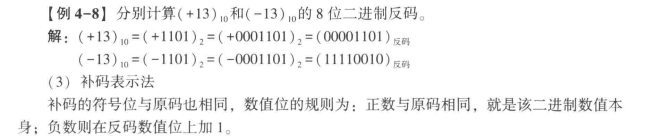
反码规则
- 正数：反码=原码（符号位0+数值本身）
- 负数：符号位1+数值位逐位取反
计算过程
13的二进制 = 1101，扩展到7位 = 0001101
(−13)反码 = 1 1110010 = 11110010（数值位逐位取反）
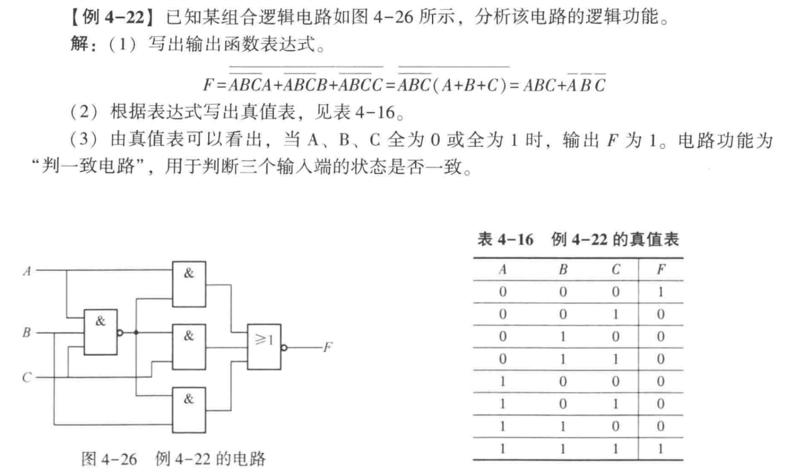
第1步：表达式已给出（化简后）
第2步：列真值表
| A | B | C | F |
|---|---|---|---|
| 0 | 0 | 0 | 1 |
| 0 | 0 | 1 | 0 |
| 0 | 1 | 0 | 0 |
| 0 | 1 | 1 | 0 |
| 1 | 0 | 0 | 0 |
| 1 | 0 | 1 | 0 |
| 1 | 1 | 0 | 0 |
| 1 | 1 | 1 | 1 |
第3步：看规律
F=1只在两种情况：ABC=000（全0）或ABC=111（全1）→ 三个输入全一样时输出1
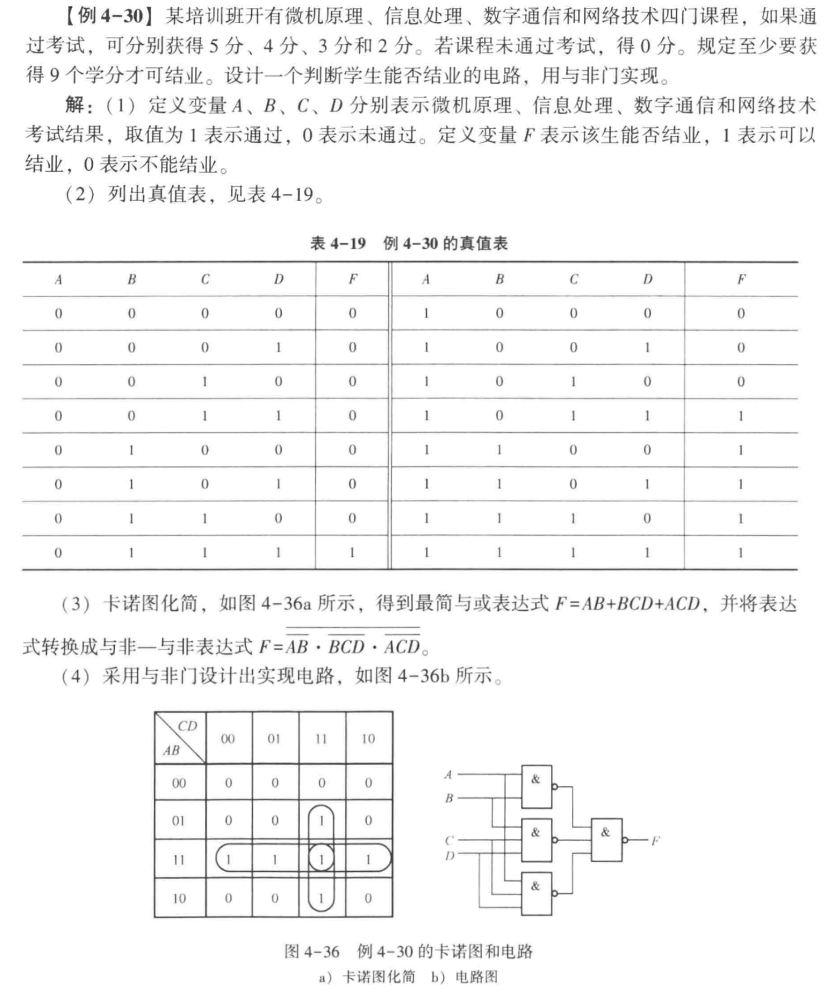
设计题流程：文字描述→真值表→表达式→化简→转与非门→画电路。
第1步：列真值表（总分=5A+4B+3C+2D≥9时F=1）
F=1的情况：ABCD=0111(9分)、1011(10分)、1100(9分)、1101(11分)、1110(10分)、1111(14分)
第2步：写标准与或式
第3步：卡诺图化简
AB覆盖m12~m15；BCD覆盖m7；ACD覆盖m11。
第4步：转与非门实现
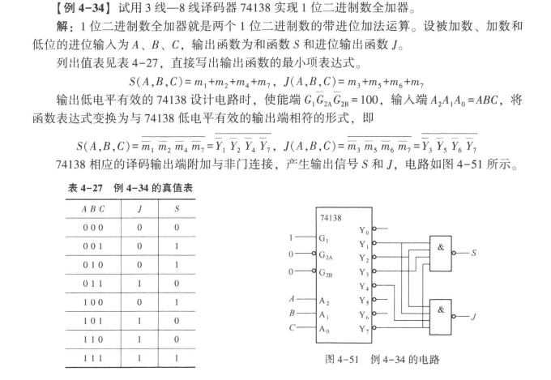
第1步：列全加器真值表
| A | B | C | S(和) | J(进位) |
|---|---|---|---|---|
| 0 | 0 | 0 | 0 | 0 |
| 0 | 0 | 1 | 1 | 0 |
| 0 | 1 | 0 | 1 | 0 |
| 0 | 1 | 1 | 0 | 1 |
| 1 | 0 | 0 | 1 | 0 |
| 1 | 0 | 1 | 0 | 1 |
| 1 | 1 | 0 | 0 | 1 |
| 1 | 1 | 1 | 1 | 1 |
第2步：写最小项表达式
J = m₃+m₅+m₆+m₇
第3步：转74138输出形式
J = (Ȳ₃·Ȳ₅·Ȳ₆·Ȳ₇)' = NAND(Ȳ₃,Ȳ₅,Ȳ₆,Ȳ₇)
第4步：连线
A₂=A, A₁=B, A₀=C, G₁=1, Ḡ₂A=Ḡ₂B=0。S接Ȳ₁,Ȳ₂,Ȳ₄,Ȳ₇的与非门；J接Ȳ₃,Ȳ₅,Ȳ₆,Ȳ₇的与非门。
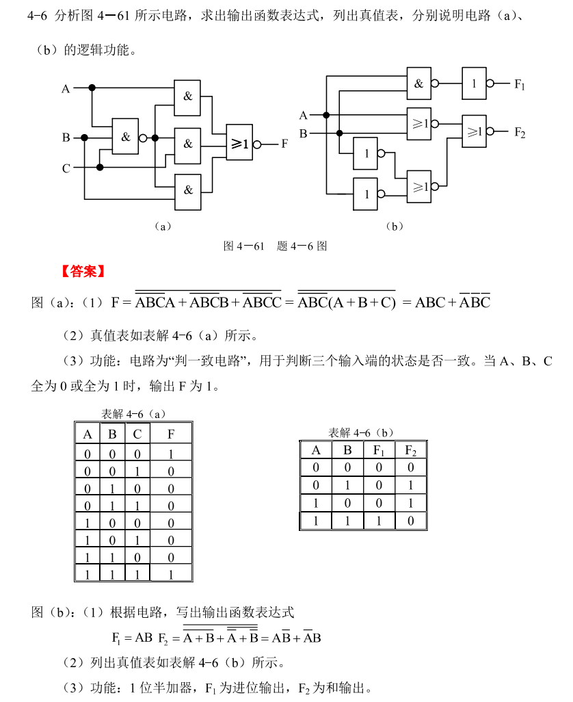
电路(a)：三输入电路
- 逐级写表达式：化简后 F = ABC + ĀB̄C̄
- 列真值表：F=1只在000和111
- 功能：判一致电路（三个输入全相同时输出1）
电路(b)：两输入双输出电路
- 写表达式：F₁=AB，F₂=A⊕B=ĀB+AB̄
- 列真值表：F₁在AB=11时为1；F₂在AB=01或10时为1
- 功能：1位半加器（F₁=进位，F₂=和）
| A | B | F₁(进位) | F₂(和) |
|---|---|---|---|
| 0 | 0 | 0 | 0 |
| 0 | 1 | 0 | 1 |
| 1 | 0 | 0 | 1 |
| 1 | 1 | 1 | 0 |
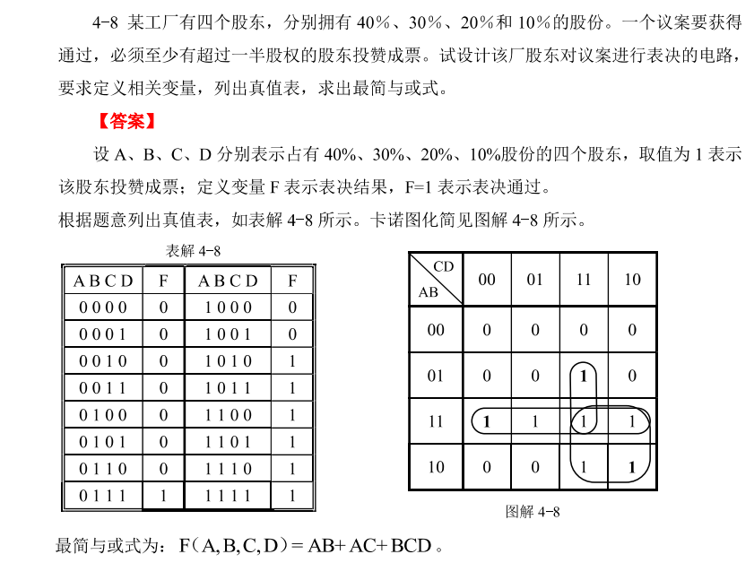
第1步：定义变量
A=40%，B=30%，C=20%，D=10%。赞成=1，反对=0。F=1通过，F=0不通过。
第2步：列真值表（股权>50%时F=1）
F=1：BCD(60%)、AC(60%)、ACD(70%)、AB(70%)、ABD(80%)、ABC(90%)、ABCD(100%)等
第3步：卡诺图化简
AB覆盖m12~m15；AC覆盖m10,m11；BCD覆盖m7。
第4步：转与非门实现
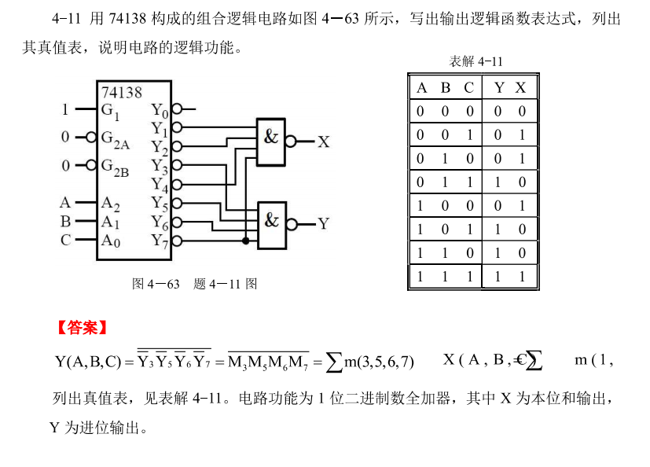
这道题和例4-34是同一道题！74138+全加器。
第1步：写表达式
Y = m₃+m₅+m₆+m₇ = AB+AC+BC（全加器进位）
第2步：列真值表
| A | B | C | X | Y |
|---|---|---|---|---|
| 0 | 0 | 0 | 0 | 0 |
| 0 | 0 | 1 | 1 | 0 |
| 0 | 1 | 0 | 1 | 0 |
| 0 | 1 | 1 | 0 | 1 |
| 1 | 0 | 0 | 1 | 0 |
| 1 | 0 | 1 | 0 | 1 |
| 1 | 1 | 0 | 0 | 1 |
| 1 | 1 | 1 | 1 | 1 |
第3步：说明功能
一位二进制全加器：X=和(S=A⊕B⊕C)，Y=进位(CO=AB+AC+BC)。验证：A=B=C=1时1+1+1=11₂，X=1,Y=1 ✓
第5章 时序逻辑电路
教材范围：书内第149–182页 | 例题2道 + 习题2道
前置知识点（从零开始）
知识点0：时钟信号、同步异步与编码——时序电路的"心脏"
① 什么是时钟信号（CP/CLK）？
时钟信号是一个周期性的方波，像节拍器一样指挥整个电路什么时候动作。触发器只在时钟的上升沿或下降沿时刻才改变状态。
上升沿：时钟从0变到1的那一瞬间（↑）。下降沿：时钟从1变到0的那一瞬间（↓）。在电路图上，CP端有小圆圈=下降沿触发，没有=上升沿触发。
② 同步 vs 异步——什么时候变？
| 类型 | 时钟 | 触发器何时变 | 生活比喻 |
|---|---|---|---|
| 同步 | 所有触发器共用同一个CP | 同时变（在CP沿时刻） | 乐队指挥一挥手，所有人同时演奏 |
| 异步 | 各触发器时钟不同 | 逐个变（前级的输出=后级的时钟） | 多米诺骨牌，一个倒下推倒下一个 |
③ BCD编码——用二进制表示十进制
十进制有0~9十个数字，用4位二进制（0000~1001）就能表示。但4位二进制有0000~1111共16种组合，多出来的1010~1111怎么办？不同的处理方式就是不同的编码：
| 编码名 | 0 | 1 | 2 | 3 | 4 | 5 | 6 | 7 | 8 | 9 | 特点 |
|---|---|---|---|---|---|---|---|---|---|---|---|
| 8421码 | 0000 | 0001 | 0010 | 0011 | 0100 | 0101 | 0110 | 0111 | 1000 | 1001 | 权重8421，最常用 |
| 5421码 | 0000 | 0001 | 0010 | 0011 | 0100 | 1000 | 1001 | 1010 | 1011 | 1100 | 权重5421，5跳高位 |
| 余3码 | 0011 | 0100 | 0101 | 0110 | 0111 | 1000 | 1001 | 1010 | 1011 | 1100 | 8421码+0011 |
④ 74163芯片——同步二进制计数器
74163是考试重点芯片，必须记住每个引脚的功能：
| 引脚 | 名称 | 功能 | 备注 |
|---|---|---|---|
| CP | 时钟 | 上升沿触发 | 所有操作在CP上升沿发生 |
| D~A(或D₃D₂D₁D₀) | 数据输入 | 预置数 | ~LOAD=0时加载这4位 |
| Q~Q(或Q_D~Q_A) | 数据输出 | 当前计数值 | 4位二进制0000~1111 |
| ~CLR | 同步清零 | =0时下一个CP沿清零到0000 | 同步！要等CP沿 |
| ~LOAD | 同步置数 | =0时下一个CP沿加载D~A | 同步！要等CP沿 |
| ENP(或P)、ENT(或T) | 计数使能 | 都=1时正常计数 | 任一个=0就暂停计数(保持) |
| RCO | 进位输出 | Q=1111且T=1时RCO=1 | 用于级联扩展 |
⑤ 用74163构成任意进制计数器的两种方法
74163本身是16进制（模16），要变成模N(N<16)计数器，有两种方法：
| 方法 | 用哪个引脚 | 检测什么状态 | 跳到哪 | 编码 |
|---|---|---|---|---|
| 清零法 | ~CLR | 检测状态N-1 | 回到0000 | 通常8421码 |
| 置数法 | ~LOAD | 检测状态N-1（或末状态） | 回到预设值D~A | 可任意码 |
知识点1：触发器——有记忆的开关
触发器能存储1位二进制信息（0或1）。就像一个电灯自锁开关——按一下开，松手后灯还亮着（记住状态），再按一下关。
| 触发器 | 功能 | 特性方程 | 生活比喻 |
|---|---|---|---|
| RS | 置1/置0/保持 | Qⁿ⁺¹=S+R'·Qⁿ | 两个按钮：一个开一个关 |
| JK | 置1/置0/保持/翻转 | Qⁿ⁺¹=J·Qⁿ'+K'·Qⁿ | RS的升级版，多了翻转功能 |
| D | 跟随输入 | Qⁿ⁺¹=D | 你给什么我存什么 |
| T | 翻转/保持 | Qⁿ⁺¹=T⊕Qⁿ | 按一下翻转一次 |
知识点2：边沿触发——只在时钟沿动作
触发器在时钟脉冲(CP)的上升沿或下降沿时刻才动作，其他时刻保持不变。就像你只在整点报时的时候才看表调整，其他时间不看。
知识点3：74163同步计数器（超级重点！）
- 同步清零：~CLR=0时，下一个CP上升沿Q全变0
- 同步置数：~LOAD=0时，下一个CP上升沿Q=D
- 正常计数：~CLR=~LOAD=1, ENP=ENT=1时，每个CP上升沿Q+1
- 优先级：清零 > 置数 > 计数
知识点4：用74163设计任意进制计数器
方法一：清零法——从0开始数，数到M-1就清零，实现模M计数器。
- 确定模值M（如10进制→M=10）
- 检测状态M-1（如10进制检测1001=9）
- 用与非门检测→接~CLR
- 数到M-1时~CLR=0，下一个CP清零→循环0~M-1
方法二：置数法——从起始值开始数，数到起始值+M-1就置回起始值。
- 确定模值M和起始值
- 检测状态起始值+M-1
- 用与非门检测→接~LOAD，D接起始值
- 数到目标时~LOAD=0，下一个CP置数→循环
知识点5：触发器特性方程推导（考试必背）
① JK触发器：Qⁿ⁺¹=J·Q̄ⁿ+K̄·Qⁿ
JK触发器有4种功能：J=K=0保持，J=1,K=0置1，J=0,K=1置0，J=K=1翻转。用真值表→卡诺图化简得到特性方程：
| J | K | Qⁿ | Qⁿ⁺¹ | 功能 |
|---|---|---|---|---|
| 0 | 0 | 0 | 0 | 保持 |
| 0 | 0 | 1 | 1 | 保持 |
| 0 | 1 | 0 | 0 | 置0 |
| 0 | 1 | 1 | 0 | 置0 |
| 1 | 0 | 0 | 1 | 置1 |
| 1 | 0 | 1 | 1 | 置1 |
| 1 | 1 | 0 | 1 | 翻转 |
| 1 | 1 | 1 | 0 | 翻转 |
卡诺图化简8个最小项 → Qⁿ⁺¹=J·Q̄ⁿ+K̄·Qⁿ
② D触发器：Qⁿ⁺¹=D
D触发器最简单——次态等于输入D。D=0→Qⁿ⁺¹=0，D=1→Qⁿ⁺¹=1。它只有"跟随"功能。
③ T触发器：Qⁿ⁺¹=T⊕Qⁿ
T触发器是JK的特例（J=K=T）。代入JK特性方程：Qⁿ⁺¹=T·Q̄ⁿ+T̄·Qⁿ=T⊕Qⁿ。T=0保持，T=1翻转。
④ 触发器功能转换方法
用一种触发器实现另一种触发器的功能，方法是令两个特性方程相等：
- 写出目标触发器的特性方程（如D触发器：Qⁿ⁺¹=D）
- 写出已有触发器的特性方程（如JK：Qⁿ⁺¹=J·Q̄ⁿ+K̄·Qⁿ）
- 令两者相等，求出J、K的表达式（驱动方程）
- 用逻辑门实现J、K的表达式
知识点6：计数器分析的完整步骤
- 看引脚连接：~CLR接什么？~LOAD接什么？P、T接什么？D~A接什么？
- 判断工作方式：~CLR=检测逻辑→清零法；~LOAD=检测逻辑→置数法；~CLR=~LOAD=1→正常计数
- 确定检测状态：~CLR或~LOAD接的与非门输入对应哪个状态
- 画状态转换图：从起始值开始，每个CP加1，到检测状态后跳回起始值
- 数状态个数：循环中有几个状态=模值
- 判编码类型：看状态序列——从0开始=8421码，从3开始=余3码，有0100→1000跳变=5421码
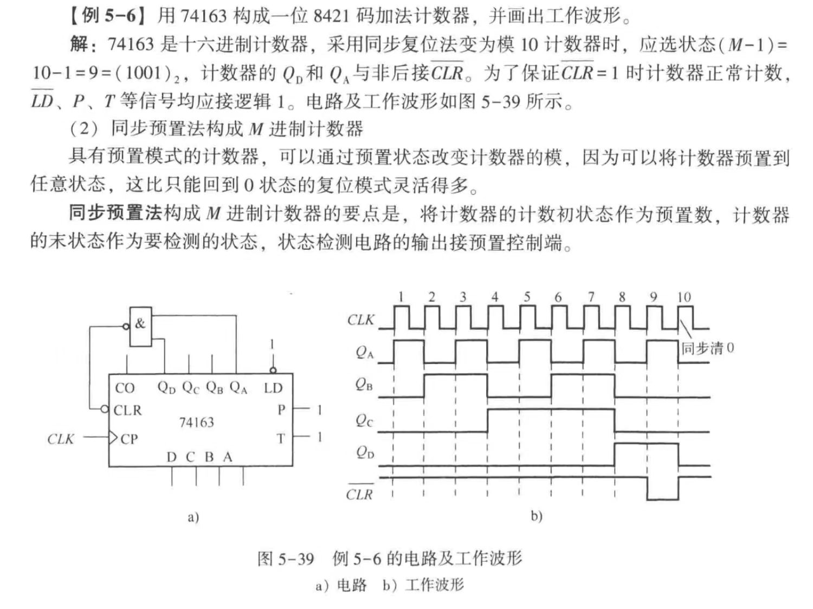
第1步：确定检测状态
模10 → 检测M-1=9=(1001)₂ → QD=1且QA=1
第2步：连线
- ~CLR = (QD·QA)' ← 用与非门检测1001
- ~LD=1, P=1, T=1（正常计数）
- A₂=A, A₁=B, A₀=C（不用管，正常计数）
第3步：工作过程
状态循环：0000~1001（共10个状态）→ 10进制计数器（8421码）
工作波形
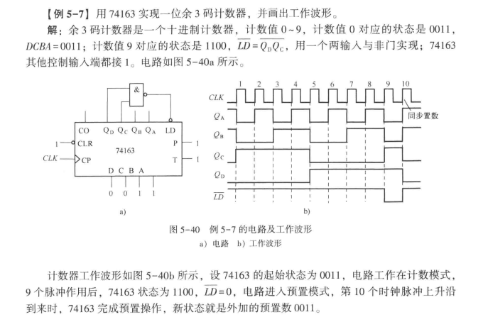
第1步：理解余3码
余3码 = 8421码+3。十进制0对应0011，9对应1100。计数范围0011~1100。
第2步：确定检测状态
起始值=0011，终止值=0011+10-1=1100 → 检测1100 → QD=1且QC=1
第3步：连线
- ~LOAD = (QD·QC)' ← 用与非门检测1100
- D3D2D1D0 = 0011（预置值=起始值）
- ~CLR=1, P=1, T=1（正常计数）
第4步：工作过程
状态循环：0011~1100（共10个状态）→ 10进制计数器（余3码）
与例5-6对比
| 对比项 | 例5-6 清零法 | 例5-7 置数法 |
|---|---|---|
| 使用引脚 | ~CLR | ~LOAD |
| 检测状态 | 1001(=9) | 1100(=12) |
| 循环范围 | 0000~1001 | 0011~1100 |
| 编码 | 8421码 | 余3码 |
| 模值 | 10 | 10 |
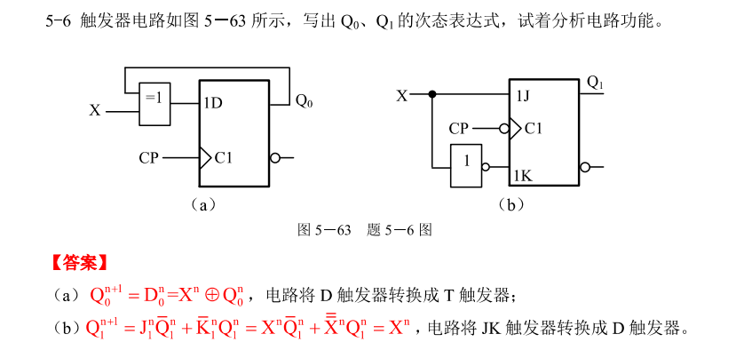
这题考的是触发器功能转换——用一种触发器加逻辑门实现另一种触发器的功能。
电路(a)：D触发器+异或门
- 写驱动方程：D₀ = X ⊕ Q₀
- 写次态方程：Q₀ⁿ⁺¹ = D₀ = X ⊕ Q₀ⁿ
- 分析功能：X=0时Qⁿ⁺¹=Qⁿ(保持)，X=1时Qⁿ⁺¹=Q̄ⁿ(翻转)
- 结论：D触发器→T触发器（X相当于T端）
电路(b)：JK触发器+非门
- 写驱动方程：J₁ = X，K₁ = X̄（X取反）
- 写次态方程：Q₁ⁿ⁺¹ = J·Q̄ⁿ + K̄·Qⁿ = X·Q̄ⁿ + X·Qⁿ = X
- 分析功能：Qⁿ⁺¹ = X，次态只取决于输入X，与现态无关
- 结论：JK触发器→D触发器（X相当于D端）
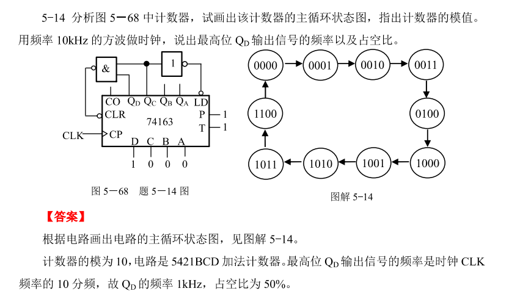
第1步：分析电路
74163的D3D2D1D0=1000（预置值8），P=T=1（计数允许）。
~CLR检测1100（QD·QC）→ 1100时同步清零到0000；~LOAD检测0100 → 0100时同步置数到1000。
第2步：画状态转换图
第3步：确定编码类型和模值
- 状态序列：0000,0001,0010,0011,0100,1000,1001,1010,1011,1100
- 这是5421码表示的0~9（不是8421码也不是余3码）
- 模值 = 10（十进制计数器）
第4步：算QD频率和占空比
QD=1的状态：1000,1001,1010,1011,1100（5个状态）
全课程解题方法论总结
第1章：半导体器件解题方法论
二极管电路分析（4步法）
- 断开二极管：把VD从电路中移除
- 算两端电位：用分压公式或KCL算阳极UA和阴极UK
- 比较判断：UA>UK→导通(当导线)；UA<UK→截止(当断路)
- 代回求输出：导通时Uo=钳位电压；截止时Uo=分压值
稳压管电路分析（4步法）
- 假设断开：VZ不工作，用分压公式算Uo
- 比较UZ：分压<UZ→截止(Uo=分压)；分压≥UZ→击穿稳压(Uo=UZ)
- 验算电流：稳压时IZ=IR−IL，检查IZmin<IZ<IZmax
- 下结论：说明VZ的状态和Uo的值
晶体管工作状态判断（4步法）
- 算发射结电压：NPN算UBE=UB−UE；PNP算UEB=UE−UB
- 判发射结：硅管≈0.7V或锗管≈0.3V→导通；≈0V→截止；远超0.7V(如3V)→损坏
- 判集电结：NPN看UBvsUC(B>C=正偏)；PNP看UCvsUB(C>B=正偏)
- 定状态：发射结导通+集电结反偏=放大；发射结导通+集电结正偏=饱和；发射结截止=截止；发射结导通+集电结零偏=临界饱和
静态工作点计算（3步法）
- 求IB：固定偏置IB=(UCC−0.7)/RB；分压式先算UB=分压→UE=UB−0.7→IC≈UE/RE
- 求IC：IC=β×IB（固定偏置）；分压式已有IC≈IE
- 求UCE：UCE=UCC−IC×RC(−IE×RE)，验算0<UCE<UCC→放大区
第2章：放大电路解题方法论
静态分析（4步法）
- 固定偏置：IB=(UCC−0.7)/RB → IC=βIB → UCE=UCC−ICRC
- 分压式偏置：UB=分压 → UE=UB−0.7 → IC≈UE/RE → UCE=UCC−IC(RC+RE)
- 验算：0<UCE<UCC→放大区正确
- 算IE：IE=(1+β)IB，为动态分析做准备
动态分析（5步法）
- 算rbe：rbe=300+(1+β)×26/IE(mA)（单位Ω，IE用mA）
- 算RL'：RL'=RC//RL（别忘了并联！）
- 算Au：Au=−β×RL'/rbe（别漏负号！）
- 算Ri：Ri=RB//rbe≈rbe（RB很大时）
- 算Ro：Ro=RC（信号源短路后从输出端看）
有未旁路发射极电阻时的动态分析（如例2-3）
当发射极电阻没有被CE完全旁路时（如分发射极电阻RE1无旁路、RE2有旁路），Au公式变化：
ri = RB//[rbe + (1+β)×RE1]
记忆口诀：未旁路的RE折算到基极要乘(1+β)，出现在分母中降低增益，出现在ri中提高输入电阻。
图解法求Q点（3步法）
- 算IBQ：IBQ=(VCC−0.7)/RB
- 画直流负载线：两端点(VCC,0)和(0,VCC/RC)
- 找Q点：负载线与IBQ对应曲线的交点，读出ICQ和UCEQ
第3章：运放电路解题方法论
运放线性电路分析（3步法）
- 虚断列KCL：在(-)端或(+)端列节点电流方程（流入=流出）
- 虚短代入电压：u-=u+，把已知电压代入
- 解方程求uo：整理方程，求出uo与ui的关系
反馈类型判断（4步法）
- 判极性：瞬时极性法——假设ui↑→追到uo→追反馈→增强=正反馈，削弱=负反馈
- 判电压/电流：反馈从输出端取——若与负载并联=电压反馈，串联=电流反馈
- 判串联/并联：反馈回到输入端——若与信号源串联=串联反馈，并联=并联反馈
- 组合：四种组合→电压串联、电压并联、电流串联、电流并联
比较器分析（3步法）
- 确定输入方式：信号接(-)端=反相比较器；接(+)端=同相比较器
- 求阈值：令u+=u-，解出ui=UTH（跳变点）
- 画传输特性：ui>UTH→一个极值；ui<UTH→另一个极值。有稳压管→限幅到±UZ
第4章：组合逻辑解题方法论
组合电路分析（4步法）
- 逐级写表达式：从输入到输出，每级门写一个表达式
- 化简：公式法或卡诺图化简
- 列真值表：所有输入组合代入算输出
- 判功能：看F=1的行的规律
组合电路设计（6步法）
- 文字→变量：定义输入输出变量的含义
- 列真值表：根据条件确定F=1的行
- 写Σm：F=Σm(最小项编号)
- 卡诺图化简：圈1→最简与或式
- 转与非门：F=(AB+CD)''=[(AB)'·(CD)']'
- 画电路图：按与非门表达式连线
74138实现逻辑函数（4步法）
- 写真值表→Σm：确定F=1的最小项
- 连输入：A₂A₁A₀=ABC，G₁=1, Ḡ₂A=Ḡ₂B=0
- 连输出：对应Ȳᵢ接与非门
- 验证：NAND(Ȳᵢ₁,...)=mᵢ₁+...=F
第5章：时序逻辑解题方法论
触发器功能转换（3步法）
- 写驱动方程：看触发器输入端接什么信号
- 代入特性方程：把驱动方程代入触发器的特性方程
- 化简对比：化简次态方程，与目标触发器特性方程对比→确定功能
74163计数器分析（6步法）
- 看~CLR：接检测逻辑→清零法；接1→不清零
- 看~LOAD：接检测逻辑→置数法；接1→不置数
- 看D~A：置数法的起始值
- 画状态图：从起始值开始逐个加1，到检测状态跳回
- 数状态数：循环中状态个数=模值
- 判编码：0开始=8421码；3开始=余3码；有0100→1000=5421码
74163计数器设计（4步法）
- 定模值M：要构成M进制
- 选方法：8421码→清零法(检测M-1)；余3码/5421码→置数法
- 连线：检测逻辑→与非门→~CLR或~LOAD；D~A=起始值
- 验证：画状态循环图，确认模值和编码正确
易错点清单（考前必看！）
第1章易错点
- 二极管方向搞反：阳极A=正极，阴极K=负极。电流从A→K。画图时三角形尖头指向K。
- 稳压管UZ记错：稳压管工作在反向击穿区，不是正向！正向和普通二极管一样0.7V。
- 晶体管管型搞混：NPN的UBE=UB−UE；PNP的UEB=UE−UB。方向相反，别算反！
- 锗管vs硅管：硅管导通0.7V，锗管0.3V。题目不说是硅管时，看UBE/UEB值判断——0.7=硅，0.3=锗。
- 饱和vs放大：UCE≈0=饱和；0<UCE<UCC=放大；UCE≈UCC=截止。别把饱和和放大搞反！
- 共阳极/共阴极判断：共阳极→阴极最低的先导通；共阴极→阳极最高的先导通。别搞反！
第2章易错点
- rbe算术错误：300+(1+β)×26/IE。例如β=50,IE=1mA→300+51×26=300+1326=1626Ω。常见错误：1326+300=1526（少加100）。
- 忘并联RL：算Au时RL'=RC//RL，不是RC。没接RL时才RL'=RC。
- 漏负号：共射电路Au=−βRL'/rbe，负号=反相。漏掉负号是考试大忌！
- 固定偏置vs分压式搞混：固定偏置=一个RB；分压式=RB1+RB2+RE。公式完全不同！
- IE≠IC：IE=(1+β)IB=IC+IB。β大时IE≈IC，但不相等！
- 图解法不画负载线：图解法必须画直流负载线！两端点(VCC,0)和(0,VCC/RC)。别只写公式。
- 分发射极电阻搞混：RE1无CE→AC分析保留，RE2有CE→AC分析短路。Au分母多了(1+β)RE1！别把RE2也算进去。
- CE旁路电容作用：DC分析中CE断路（RE全部参与稳定Q点）；AC分析中CE短路（被旁路的RE消失）。有CE→增益大；无CE→增益小但稳定。
第3章易错点
- 虚短条件搞错：虚短只在有负反馈（线性区）时成立！比较器（无负反馈）虚短不成立。虚断永远成立。
- 反相/同相搞反：信号从(-)端进=反相（输出反相）；从(+)端进=同相（输出同相）。
- 电压跟随器≠反相比例：RF=0时uo=ui（跟随），不是uo=−ui。
- 反馈类型判断漏步骤：必须判断①极性(正/负)②取样方式(电压/电流)③比较方式(串联/并联)。少判一个扣分！
- 比较器阈值方向：反相比较器（信号接(-)端）→ui↑时uo↓。传输特性曲线方向别画反！
- 稳压管限幅方向：双向稳压管把±Uom限到±UZ。UZ=5V→输出±5V，不是±10V。
第4章易错点
- 原码/反码/补码搞混：正数三者相同；负数反码=原码取反（除符号位），补码=反码+1。
- 卡诺图圈法错误：圈必须是2n个（1,2,4,8）；不能圈对角；必须包含所有1；圈越大越好。
- 德摩根定律记反：(AB)'=A'+B'（与非=非加非）；(A+B)'=A'·B'（或非=非乘非）。别记反！
- 74138输出低有效：被选中的Ȳ=0（不是1！）。用与非门连接（不是与门！）。
- 设计题门槛搞错：仔细读题——"至少9学分"是≥9，"超过一半"是>50%不是≥50%。差一个字答案不同！
- Σm编号错误：ABCD=0111→m7（不是m11！）。最小项编号=输入当作二进制数的十进制值。
第5章易错点
- 74163同步vs74161异步：74163=同步清零（等CP沿），74161=异步清零（立即清零）。检测状态差1！
- 清零法检测状态：74163同步清零→检测M-1（模M检测M-1）；74161异步清零→检测M（模M检测M）。
- 编码类型判断错误：8421码从0000开始；余3码从0011开始；5421码有0100→1000跳变。别把5421码当8421码！
- 触发器特性方程记错：JK: Qⁿ⁺¹=JQ̄ⁿ+K̄Qⁿ；D: Qⁿ⁺¹=D；T: Qⁿ⁺¹=T⊕Qⁿ。别把K̄写成K！
- 占空比计算：占空比=QD=1的状态数÷总状态数。不是50%就一定是50%——要数清楚！
- 频率计算：fQD=fCP/模值。模10→fQD=fCP/10。别除以2的幂（那是二进制分频）！
考试速查表
公式速查表
| 章节 | 公式 | 用途 |
|---|---|---|
| 第1章 | U=I×R | 欧姆定律 |
| 第1章 | IB=(UCC−0.7)/RB | 固定偏置基极电流 |
| 第1章 | IC=β×IB | 晶体管放大 |
| 第1章 | UCE=UCC−IC×RC | 集射电压 |
| 第1章 | IE=IC+IB=(1+β)IB | 发射极电流 |
| 第1章 | ICS=UCC/RC | 饱和集电极电流 |
| 第2章 | UB=UCC×RB2/(RB1+RB2) | 分压式偏置基极电压 |
| 第2章 | rbe=300+(1+β)×26/IE(mA) | 输入电阻(Ω) |
| 第2章 | Au=−β×RL'/rbe | 电压放大倍数 |
| 第2章 | RL'=RC//RL | 等效负载 |
| 第2章 | Ri=RB//rbe≈rbe | 输入电阻 |
| 第2章 | Ro=RC | 输出电阻 |
| 第3章 | u+≈u-(虚短)，i+=i-=0(虚断) | 运放两大法宝 |
| 第3章 | uo=−(RF/R₁)·ui | 反相比例 |
| 第3章 | uo=(1+RF/R₁)·ui | 同相比例 |
| 第3章 | uo=ui | 电压跟随器(RF=0) |
| 第3章 | uo=−RF·(ui1/R₁+ui2/R₂) | 反相加法器 |
| 第3章 | uo=(RF/R₁)·(ui2−ui1) | 减法器(R₃=R₁,R₄=RF) |
| 第4章 | (AB)'=A'+B'，(A+B)'=A'·B' | 德摩根定律 |
| 第4章 | F=Σm(i₁,i₂,...) | 最小项之和 |
| 第4章 | F=(AB+CD)''=[(AB)'·(CD)']' | 转与非门 |
| 第5章 | Qⁿ⁺¹=J·Q̄ⁿ+K̄·Qⁿ | JK触发器 |
| 第5章 | Qⁿ⁺¹=D | D触发器 |
| 第5章 | Qⁿ⁺¹=T⊕Qⁿ | T触发器 |
| 第5章 | fQD=fCP/模值 | 输出频率 |
编码速查表
| 编码 | 0~9对应二进制 | 识别特征 | 起始值 |
|---|---|---|---|
| 8421码 | 0000~1001 | 最常见，权重8421 | 0000 |
| 5421码 | 0000~0100,1000~1100 | 0100→1000跳变 | 0000 |
| 余3码 | 0011~1100 | 8421码+0011 | 0011 |
芯片速查表
| 芯片 | 功能 | 关键引脚 | 注意事项 |
|---|---|---|---|
| 74138 | 3-8译码器 | A₂A₁A₀=输入，Ȳ₀~Ȳ₇=输出(低有效)，G₁=使能 | 输出低有效，用与非门实现逻辑函数 |
| 74163 | 同步4位二进制计数器 | ~CLR=同步清零，~LOAD=同步置数，P/T=使能 | 同步！检测M-1，模M |
| 74161 | 异步清零计数器 | 同74163但~CLR=异步 | 异步！检测M，模M |
晶体管状态速查表
| 状态 | 发射结 | 集电结 | UCE | 特征 |
|---|---|---|---|---|
| 放大 | 正偏(导通) | 反偏 | 0<UCE<UCC | IC=βIB |
| 饱和 | 正偏(导通) | 正偏 | UCE≈0.3V | IC<βIB |
| 截止 | 反偏(截止) | 反偏 | UCE≈UCC | IC≈0 |
| 临界饱和 | 正偏(导通) | 零偏 | UCE≈UBE | 放大与饱和的分界 |